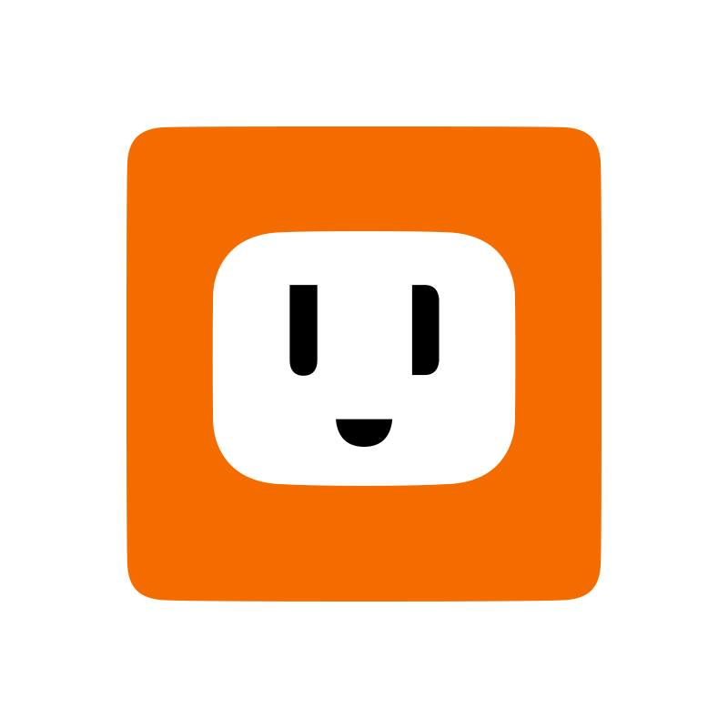

數位平台為政大傳播學院五個實習單位之一，學習數位設計相關內容，包括Photoshop、Illustrator、Indesign等平面設計軟體，與設計實務相關內容。
數位平台是我學習平面設計的一個起點，在新聞媒體走向網路的時代，能夠學會利用這些軟體製作出內容變得相當重要，而在數位平台學習，也讓我學會使用AI、PS，及基礎的html5及After
effect動畫，幫助我日後活動時可以幫忙製作製圖及文宣。
政大新聞系每年會舉辦新聞營，透過專業的教師指導高中生們新聞寫作，並邀請業界有名的記者或報社團體進行演講，更帶他們到電視台參訪認識新聞產業。
政大新聞營的經歷，更加強化責任感與領導能力，因為所帶領的人不只是自己的同儕與學弟妹，還包含全台各地的高中生們，因此要顧及一個上百人的團體，是需要一定的專注力與清楚的思緒。
政大學聲為政治大學學生會底下的校內媒體，內容報導與政大學生相關的校園議題及文化、人物專體，在學校各處供學生索取。
剛進入時為攝影記者，大二下學期轉職為編輯，編排23期教學助理專題及第24期周行一校長任內爭議專題，因兩者皆是硬性專題，因此整理資訊製成圖表是當時比較重要的工作內容。也在這時學習到雜誌排辦的相關技巧，與資訊圖表在呈現上的巧思。
大學報為傳院不分系學生分流至新聞系的必修課程，讓學生在一個學期時間，學習新聞採訪、寫作、平面新聞排版及影音內容製作新聞
在大學報擔任的是藝文、新知版記者，報導內容為大學生間的藝文活動，及大學生參與的新知識新發明等新事物。採訪足跡從宜蘭縣到高雄市都有，議題內容跨足性別、環保、文化保存等多個領域。可以說是大學生活相當充實的一段時光。

udn聯合新聞網新聞部工讀生
2019.07
大三暑假在聯合新聞網udn擔任新聞部工讀生，負責外稿上稿、新聞稿改寫的工作。在這段工作期間雖然沒有採訪經驗，但可以近距離觀察話題趨勢，與業界工作的狀態。
幸運的是，在我工作的這段期間，剛好碰上2020總統大選最白熱化的階段，從柯文哲組黨到最終投票結果出爐，我在udn見證了民眾與媒體的狂熱。幾乎每次工作都會處理一到兩篇的政治分析稿，這也提起我對政治新聞的興趣，這學期也修習政治傳播課程。
因為希望將大三跑大學報的經驗傳承給學弟妹，所以大四決定回到大學報擔任編輯主任，主要負責大學報紙本版面編輯。並將學弟妹的作品刊登在Issuu上。
這一屆經歷香港反送中與2020大選。反送中報導是大學報第一次嘗試了全版壓色，去呈現香港的大學生與警方對峙黑暗時刻。選舉專題則嘗試在頭版放上全版候選人的青年政策比較表格，並出增版呈現青年對大選的看法，這些是我擔任編主時幾次比較特別的嘗試。